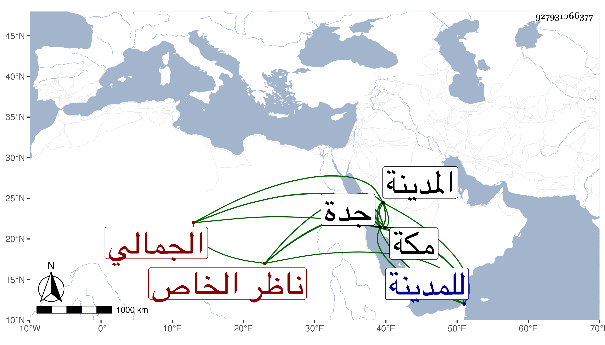

0902Sakhawi.DawLamic.ITO20230111-ara1.EIS1600.927931066377
Biography ID: 927931066377
1123
شاهين الجمالي ناظر الخاص يوسف بن كاتب جكم . ولد تقريبا في سنة ثمان وثلاثين ، وقدم في سنة ثلاث وخمسين وقد بلغ ترقى إلى أن عمل شادية جدة سنين وحمدت مباشراته بالنسبة لغيره لعقله ورفقه وفهمه وعدم هرجه وسكونه مع اقباله على العلم وتطلعه للقراءة فيه بحيث قرأ على الزين قاسم بن قطلوبغا شرحه لمختصر المنار في أصولهم والقدوري عليه وعلى الصلاح الطرابلسي وعلى النجم ابن قاضي عجلون الصرف والعربية وعلى البدر المارداني في الفرائض والحساب وعلى البدر بن خطيب الفخرية في العربية وعلى الفخر الديمي في البخاري والشفا غير مرة وغير ذلك في آخرين ، وقد سمع علي ومني أشياء وندبه السلطان للوقوف على عمارته في البندقانيين والخشابين فشكر ، وقد تزوج ابنة أستاذه بعد موت خير بك ثم فارقها مع كونها ولدت منه غير مرة وماتوا ثم تزوج حفيدته ابنة الكمالي ناظر الجيش ولكنه لم يدخل بها إلى الآن ، واستقر به في مشيخة الخدام بالمدينة وفي أثناء ذلك رسم بتوجهه لنيابة جدة وأضاف لذلك في ثاني سنيها عمارة بالمسجد المكي كعلو بئر زمزم ورفرف المقام الحنفي ثم سقاية العباس ، واجتهد بعد ذلك في إجراء عين حنين وتخلف عن توجهه للمدينة بمكة سنة خمس وتسعين لذلك وساعدته القدرة الالهية بالأمطار ، وكان أمير الركب الأول في سنة ست وتسعين وتعب كثيرا بمن كان معه ثم عاد لمباشرة المشيخة وعمر المكتب والسبيل وغيرهما مما كان وهي من عمارة الملك ، وهو كفؤ لكل ما يفوض إليه حسن النظر والتأمل ، وله بالمدينة مآثر وقرب مع تجديد أماكن واحياء أخرى وانفاد أوقاته بالعبادة والتلاوة وسماع الحديث والمطالعة والتطلع إلى الترقي في الفضائل ، وعنده من تصانيفي عدة مضافة لما حواه من كتب العلم ، وبالجملة فهو نادرة في أبناء جنسه حسنة من حسنات الوقت ومحاضرته جيدة وأدبه كثير وعقله شهير وأهل طيبة مسرورون به .
